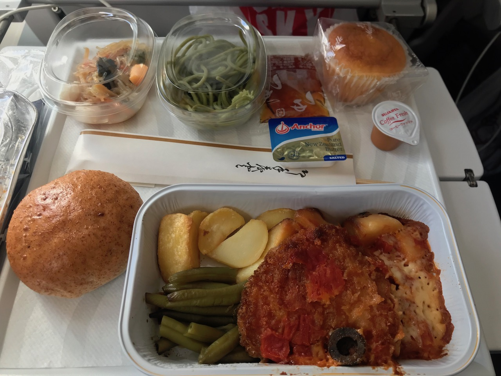
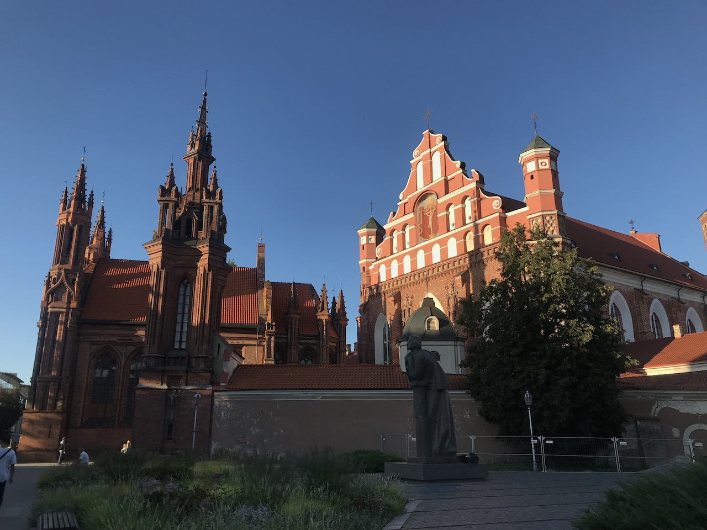
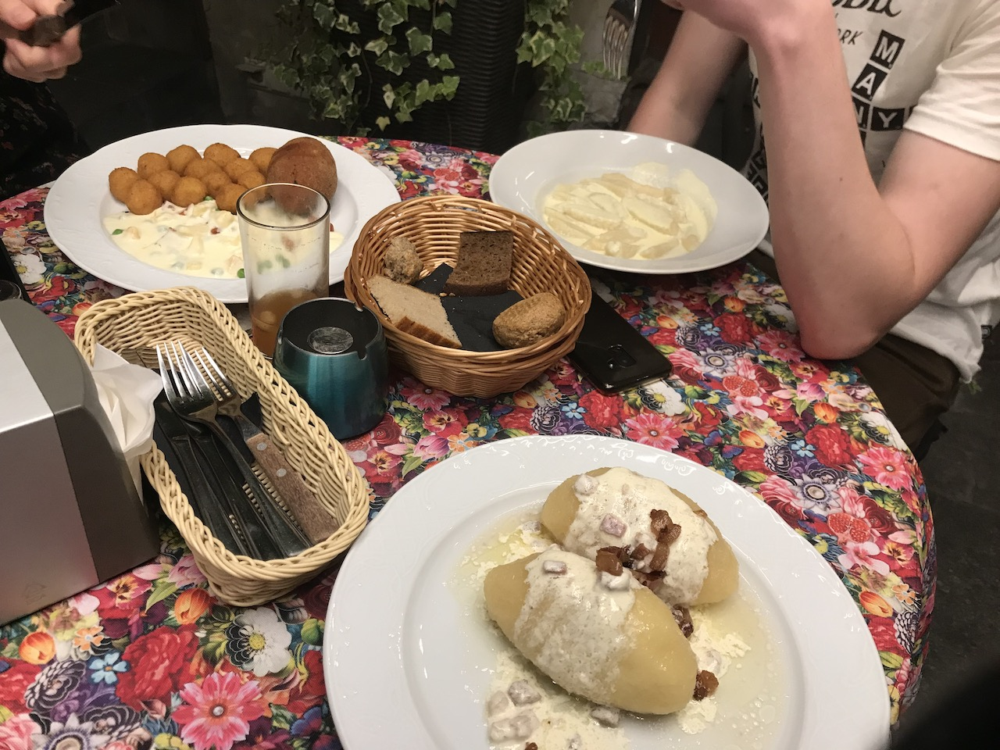
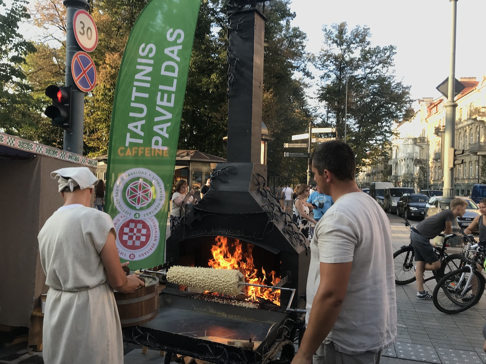
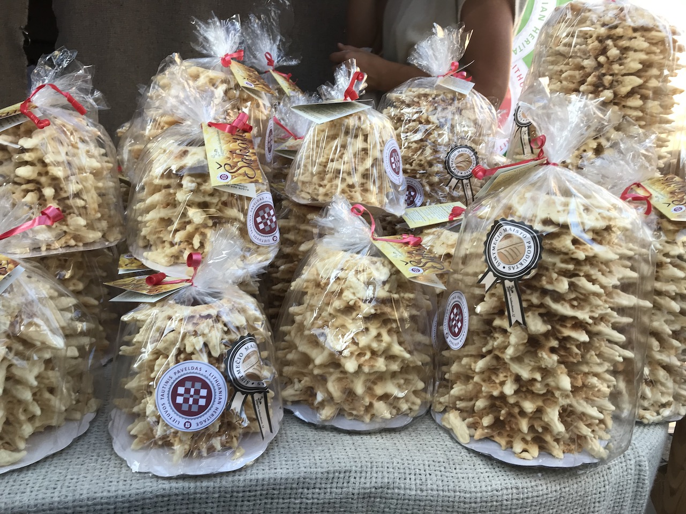
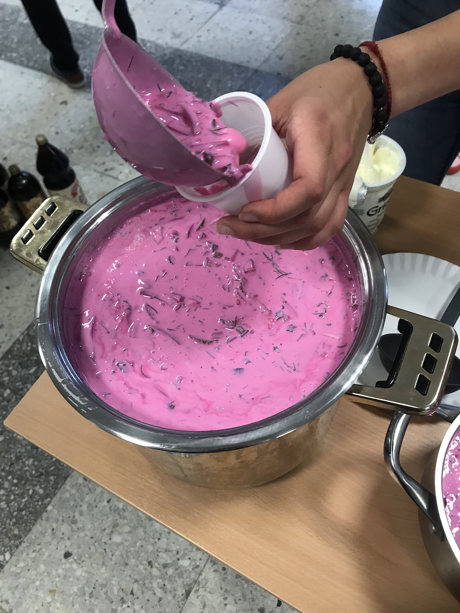

研究テーマとは少し逸れてしまいますが、せっかくなので道用ゼミの皆さんにも
リトアニアを感じてもらいたいと思ったので、暇なときにでも覗いてください。
成田発の飛行機でヘルシンキ（フィンランド）へ向かいました。
＊トラブル１ 成田空港で飛行機が渋滞。１時間ほど遅れて出発
１時間遅れで出発するも、機長の頑張り（？）で30分弱の遅れでヘルシンキに到着。
しかし、ヘルシンキからビリニュス（最終到着地）への乗り継ぎ時間が30分と大ピンチ！
この30分の間で、入国審査・手荷物検査など爆速で終わらせ、なんとか乗り継ぎ便に間に合い・・・。

リトアニア・ビリニュス空港に到着
＊トラブル２ 無事に到着し、安心していたのも束の間、私のキャリーケースが一生出てこない。
ロストバゲッジです。。。
初日からこんなにトラブル続きで心配になりますが、翌日キャリーケースも無事に手元に戻ってきました。
ドタバタ劇場で始まった、留学生活。今はアゼルバイジャン人と韓国人の留学生２人と共同生活中です。
部屋は狭く、トイレは臭い。シャワー・キッチンは共同で、冷蔵庫のものは盗まれる。
住居環境は決して良いとは言えませんが、ルームメイトは2人とも素敵な方です。
私はビリニュス大学の、Faculty of Economics and business administration に所属しています。
履修している授業は、マーケティング・マネジメント・リトアニア語の３つです。
まだ、始まったばかりなので、なんとも言えませんが、頑張って食らいつきます。
ちなみに、リトアニア語でありがとうは「Ačiū」アチューです。かわいい。

手前のお皿が、いももちの中に挽肉が入ったリトアニアの名物料理「ツェペリナイ」
美味しいけど量が多くてお腹にたまる。

味はホットケーキよりのバームクーヘン。素朴な味で美味しい。スーパーなどでも売っている。


まるで魔女の料理のような見た目だが、酸味がある冷静スープで意外と美味しい。
この色は、ビーツという野菜から出ているもので、着色料はもちろん使っていない。
リトアニア人は夏場にこのスープを飲むらしい。

リトアニア生活、楽しいですが、ちょっぴり寂しいので、リトアニアに遊びに来てください。